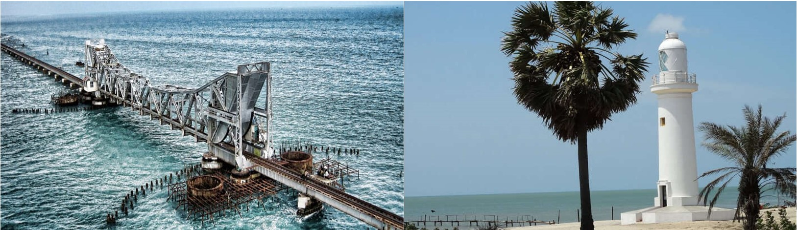

North Central Province
Dambulla Cave Temple
Mihintale
Polonnaruwa vatadage
Open from 7.00 a.m. - 7.00 p.m.
Located in central Sri Lanka. In its five sanctuaries, is the largest, best-preserved cave - temple complex in Sri Lanka.
The cover in an area of 2,100 square metres. The mural paintings are particular importance, as are the 157 statues.
The rangiri dambulla cave temple is living Buddhist site that is focused on a series of five cave shrines.
This property includes elements and components related to different facets of creativity to express the outstanding universal value of property.
There is polychrome statuary either molded with stucco or clay or carved out of the living rock within the cave shrines.

Mihintale is reserved as his birthplace of Buddhism in srilanka. This is situated at north central province and I is a mountain peak near Anuradhapura in sri lanka.
It believed by Sri Lankans to be the site of a meeting between the Buddhist monk mahinda and king devanampiyatissa which inaugurated the presence of Buddhism in srilanka.

Opening time 7.00 a.m. - 8.00 p.m.
This is located at Northern Province. He polonnaruwa vaadage is an ancient structure dating back to the kingdom o polonnaruwa of Sri Lanka.
It is had been built during the reign o Parakramabahu. This is best preserved example of a vat adage in the country.